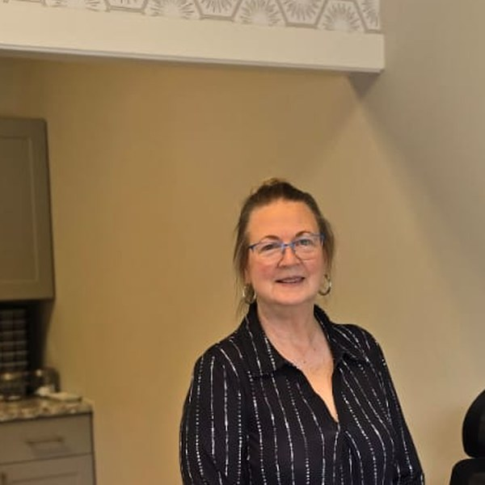
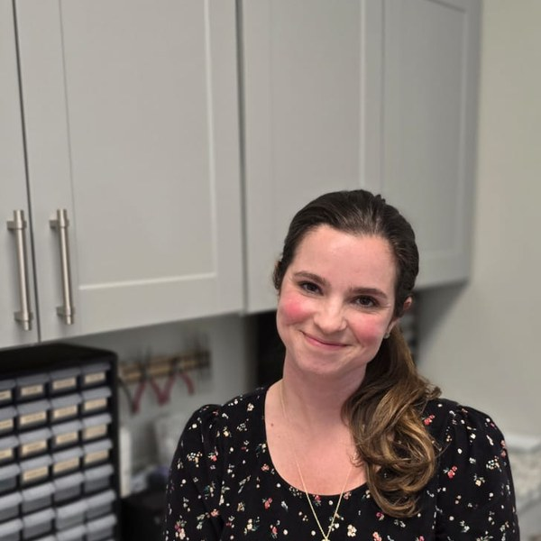

About Nashville's Hearing & Communication Center
Evidence-based, patient-centered audiology in Nashville, TN — led by Dr. Gina Angley.
Meet the NHCC Team
The people who walk alongside you on your hearing journey — every step from your first call to long-term care.
Dr. Gina Angley, AuD, CCC-A
Doctor of Audiology & Owner
Doctor of Audiology trained at Vanderbilt University, with experience at the Bill Wilkerson Center where she served as Associate Director of Adult Amplification. Dr. Angley founded NHCC to deliver evidence-based, patient-centered audiology in the Nashville community she has called home since 2006.

Suzanne Greer
Patient Care Coordinator
I have been an active member of the Bellevue community since 1985. I was a Branch Manager in Bellevue for 22 years of my 48-year career in banking. I was also a past president of the Bellevue Chamber of Commerce. My previous career impressed upon me the importance of building strong personal relationships and delivering exceptional customer service. I’m excited to be in a position to help others on their journey to better hearing, understanding it will greatly enrich their quality of life.

Jessica Johnson
Audiology Assistant
I have always had a passion and desire to help people in any capacity; whether that was working in the family business, working at an eye clinic, or volunteering for one of my son’s school trips. I’m excited to be a part of the NHCC family, serve my community, and walk alongside patients on their hearing journey.
Deidre Kyzer
Audiology Assistant
My personal journey with hearing loss has given me a deep understanding of the challenges and emotions many patients experience. I am excited to join NHCC because I am passionate about helping others feel supported, understood, and confident throughout their hearing journey. Being able to work in a field that has personally impacted my life is incredibly meaningful to me, and I look forward to making a positive difference in the lives of our patients and their families alongside the NHCC team.
Values
Since 2010, I've worked with patients who have received exceptional hearing care elsewhere. But for some patients, their experience with audiology has not met their needs. Because of this, Nashville's Hearing & Communication Center operates on the following values:
Transparency
Transparency so you understand the difference between the value in the device and the value of the provider
Exceptional
Exceptional patient-centered care should be the only care you receive
Innovative
Innovative care that is firmly rooted in the latest research and best practices
Listening
Listening to your challenges and needs rather than talking about all the things I know
Accessibility
Accessibility of expertise often sought after at major medical centers
What to expect
Throughout your care at Nashville's Hearing & Communication Center, you'll experience the gold standard of audiology at every step.
Patient and attentive service
Because we put our value on our medical care and not on device sales, everyone will get the same level of excellent treatment regardless of where they purchase their devices. And you'll never feel rushed or pressured into getting hearing aids or an assistive device if you're not ready.
Thorough testing & device optimization
Whether you purchase a hearing device from NHCC or elsewhere, we'll conduct thorough testing and real ear measurements to make sure your device is optimized to your unique ear and level of hearing loss.
Transparent, unbundled pricing
You're not required to purchase your device from NHCC. But if you do, you'll get your device at cost and receive an itemized invoice so you know exactly what you're paying for. We also accept CareCredit financing for those whose insurance doesn't cover audiology services.
FAQ
What does personalized care at NHCC look like?
At NHCC, we'll do in-depth questioning to understand your particular concerns and struggles and get an accurate picture of how your hearing loss affects your daily life. Expect to do most of the talking during your appointment—we're here to listen. After your full diagnostic testing and interview, you'll get a fully customized plan based on gold standard practices within audiology.
Why are hearing aids so expensive? Some cost $2,000–$6,000 — sometimes even higher.
Most hearing clinics typically pay $400–$1,300 per hearing aid. Then the costs of the provider's time and expertise, business expenses etc. are bundled into your total price without any transparency of what you're actually paying for.
What is the difference between a bundled service model and an unbundled service model?
In a bundled service model, the provider or clinic is presenting you with one set price, and you don't see how much of the total cost is the hearing aid and how much of the total cost is related to services. This model is not transparent and has resulted in the misconception that hearing aids are overpriced. At NHCC, you get the advantage of an unbundled service model. You'll always know the cost of the device as it shows on your invoice—what we actually pay for the device. We itemize each service so you know exactly what you're paying for.
Are real ear measurements really necessary?
Real ear measurement (sometimes known as hearing aid verification) is an evidence-based practice that results in much higher patient satisfaction with their hearing aids. Uncalibrated hearing aids may be better than none at all, but in order to get the full benefit of your device you will need to have them calibrated to your specific ear and hearing loss. For example, you can pick up a pair of readers from a pharmacy or grocery store and they will improve your vision. Those glasses, however, are not tailored to your eyes the way prescription glasses from an optometrist are.
How does hearing aid verification work?
Also known as real ear measurement, hearing aid verification starts with placing a small, flexible microphone in the ear canal and then placing the hearing aid in the ear. With this microphone, we can then measure how loud the hearing aid is while it is in your ear. While the microphone measures the sound, acoustics, and shape of your ear, we are able to see the data in real time and make changes to your settings.
Why don't my hearing aids work?
There are three major reasons why people are dissatisfied with their hearing aids: (1) Your hearing aids aren't verified — to ensure patients are receiving the maximum benefit of their hearing aids, the hearing aids should be verified through real-ear measurements, also known as probe microphone measurements. Patients who have had their hearing aids verified report much higher satisfaction. (2) Your hearing aids are not fit to your current hearing — hearing changes over time, and devices need to be adjusted. (3) Your hearing aids aren't the right solution for your hearing profile and lifestyle — we'll evaluate whether your devices, or a different solution, are the best fit.
If it's not a full-service prescriptive hearing aid that I need, what else could I get?
As of August 17, 2022, the FDA released regulations for a new classification of hearing aid: over-the-counter hearing aids (or OTC). These devices are meant for those with a perceived mild to moderate degree of hearing loss. This may be a better entry point for a patient, and Nashville's Hearing & Communication Center offers OTC devices to patients. It could also be an accessory or assistive listening device (ALD) for a particular situation. If the only situation where the hearing loss is noticed is, say, at a theater, a personal loop system may be all you need.
Are top-of-the-line hearing aids actually worth the money?
There is currently no independent research (research not from a hearing aid manufacturer) that shows more expensive means better understanding and performance. More expensive does not mean that you will understand speech better, that the hearing aid will last longer, or that it's better quality. At Nashville's Hearing & Communication Center, we help you understand the differences in what is available to you as you make your decision. Once we have an understanding of what your full hearing profile looks like, your lifestyle, and your budget, we can help you make an informed decision on what device will work best for you.
Reviews from our patients
Patient reviews will be embedded here.
This section is reserved for the Review Manager / medpb.com widget that appeared on the original NHCC site (results.medpb.com/nsv/). We'll wire it up once the embed credentials are provided.
Ready to talk to your Nashville audiologist?
Get top-tier audiology in Nashville. Call 615.678.8638 to schedule or see all services.